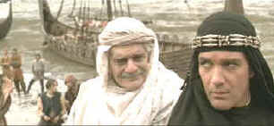

|
13th Warrior/B,A |
|
Touchstone/199/103m/ANA
2.35
|
There's a nice relationship built in the opening minutes of The 13th
Warrior between Antonio Banderas playing the young Ahmed Ibn Fahdlan and older wise companion
Melchisidek played by Omar Sharif. There's a fine tradition in action/adventure movies for this
sort of older/younger character relationship. The 13th Warrior fails to cash in on this
valuable early investment. Still, there's enough action currency and jangling energy to almost make
you forget about Sharif's character.
|
 |
| Wish I could come with you, but you're the star.
©Touchstone |
A romantic mistake sets Ahmed on the road to adventure safely away
from his native land. When Ahmed is forced to join a pack of marauding Norsemen, his tenuous
relationship as the weakest of the pack slowly turns through the wheel of superior knowledge and
sophistication. Arriving in the homeland of a great Norse kingdom, the band join their comrades to
defend the kingdom against a supernatural menace. Through ferocity and tenacity they defend the
city against fear and terror. Each of the Norse captains uses his special abilities to repel the
invaders. Banderas adds his Eastern savvy to the mix and the heroes make one last great stand to
save the day. Did you ever have a doubt? The big question is can the Persian poet Ahmed wield
a sword with the same grace as he can turn a phrase.
Banderas is very well cast as The 13th Warrior. His swarthy slight
frame and fiery intelligent eyes add strength and power to his character. He wields a sword with
convincing authority and he is limber enough to make the action acrobatics seem real enough. Yes,
he can romance the women. Vladimir Kulich and Dennis Storhoi play the hulking Vikings chiefs and
they prove staunchly able in the acting and action department.
Director John McTiernan is in sharp form, mounting tension with a fine sense of
pacing and choreographing the action with fiery intensity. Crichton's script from his novel Eaters
of the Dead is solid "B" material. It knows where it wants to go and delivers the
tithe to viewers. The cinematography of Peter Menzies Jr. adds a grand scope to the big
vision.
There are a lot of dark scenes, with fires flaring and swords catching the
sparks of light. The DVD transfer of The 13th Warrior has a lovely contrast balance,
providing ample light for grand shadow detail without blowing out brighter scenes. No unplanned
surprises popping out from murky shadows on this DVD. Colors are lively, providing a wide palette
for skin tones. The image is sharp enough to catch the glint in Banderas eyes. Jerry
Goldsmith's somewhat bombastic chords are almost as ferocious as the warriors. The music is given a
bold treatment on the sound mix. Details are consistently direction and overall the Dolby Digital
5:1 mix adds to the production values of The 13th Warrior on DVD.
|
|
|
|

Selections from the feature archive include articles on
Akira Kurosawa, Frank
Darabont, Blonde Bimbos, Hollywood Street Gangs, or Vietnam: The
Hollywood Pariah, and many more....

Hail, Hail, the Gangs in Hollywood
From Angels with Dirty Faces to West Side Story to
Menace II Society, Hollywood has depicted youth gangs as reflections of the times.

 Gary Morris's insightful publication Bright Lights
Film Journal turns the celluloid in films from a unique perspective. Click on the image above
for more pure movie views. Gary Morris's insightful publication Bright Lights
Film Journal turns the celluloid in films from a unique perspective. Click on the image above
for more pure movie views.
 Direct from the corridors of the Home Theater Forum, Home Theater Talk is the
newest place on the Net to discuss everything home theater. Friendly atmosphere and knowledgeable
folks are the secret ingredients. Direct from the corridors of the Home Theater Forum, Home Theater Talk is the
newest place on the Net to discuss everything home theater. Friendly atmosphere and knowledgeable
folks are the secret ingredients.
Imaging Science Foundation
The Imaging Science Foundation promotes proper standards in home theater viewing. ISF trained
technicians offer monitor calibration services to consumers. The difference in a properly
calibrated monitor can be astounding. Click on the image to find an ISF member near you.

Information on film sound in theaters and home theaters. Lots of helpful information provided in a
handsome interface.

The
Movie Poster Archive includes extensive poster images from the films of stars like Susan Hayward,
Kirk Douglas, Katharine Hepburn and many more. Our featured star is Errol Flynn. |